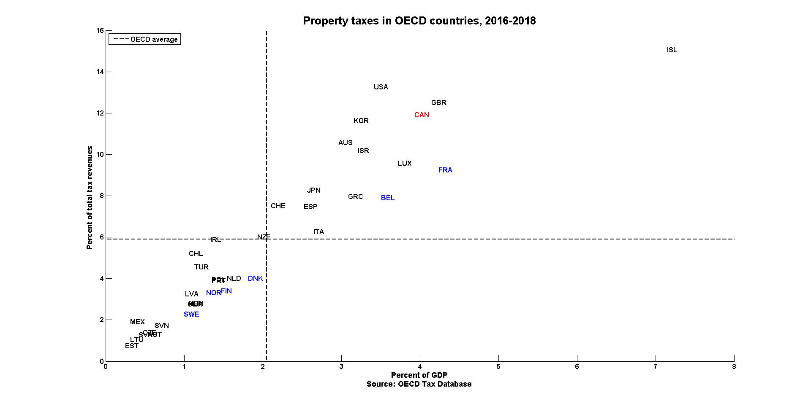
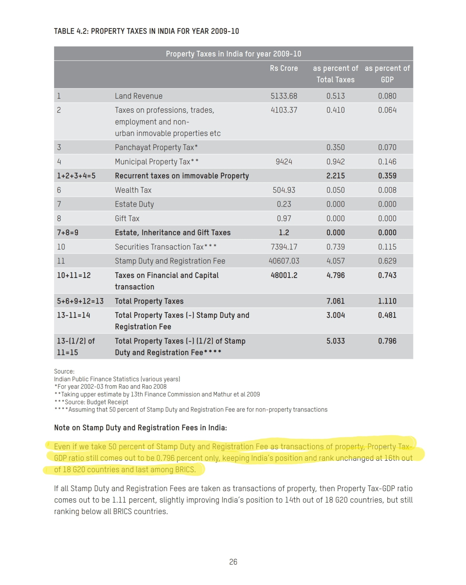
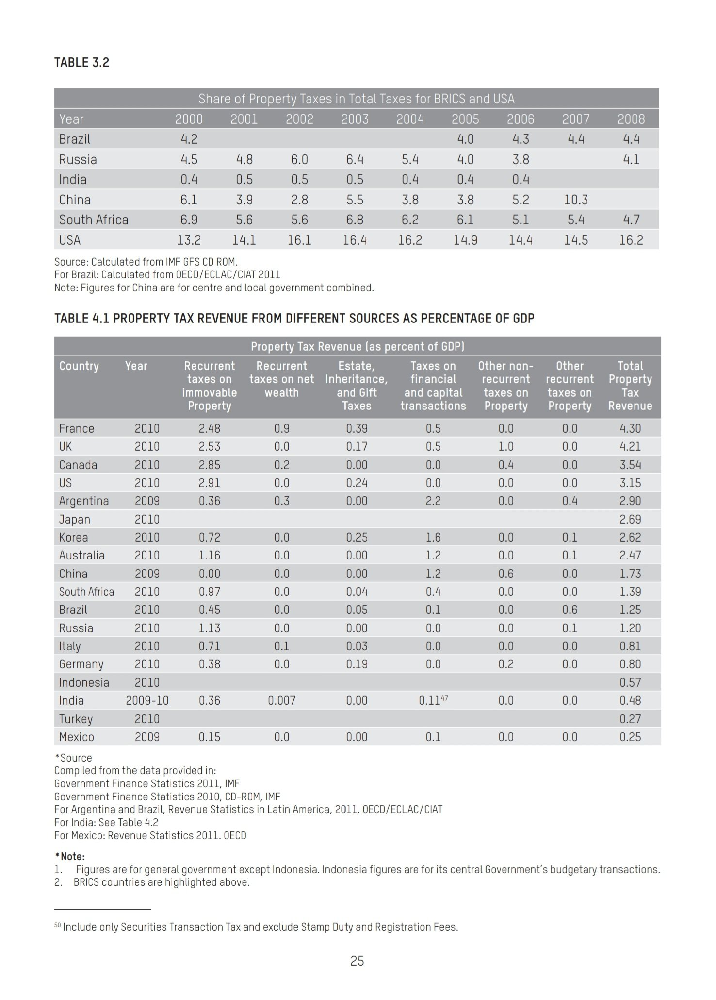
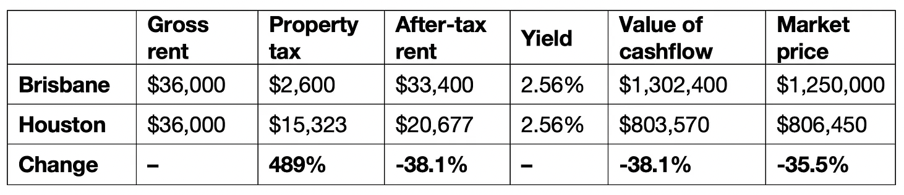

India has extremely low property taxes.
1 Property tax revenue
World Bank’s discussion paper, “Property Taxation in India: Issues Impacting Revenue Performance and Suggestions for Reform” provides an estimate for the property tax as a % of GDP for India


source (The OECD’s definition of ‘property tax’ includes all taxes on wealth)
Spot checking India’s figure by calculating it for Delhi: In FY23, the total property tax collected was Rs 2,417 crore, which is about 0.2% of the GSDP of Delhi.
2 Add stamp duty and other taxes/fee
Including only property taxes might not be appropriate since India collects a significant amount of revenue from Stamp Duty too, which is levied when a property is sold. But even if we add stamp duty revenue and revenue from other taxes on property, India trails behind not only in OECD but also G20 and BRICS in terms of property tax as a % of GDP and also as a % of total taxes collected.


3 How do property taxes affect property prices and affordability
I think there are three main ways in which property taxes affect property prices and/or affordability:
(I’m not trained in economics, so there might be mistakes. Feel free to point them out in the comments. Thanks in advance.)
| Mechanism | Upfront price | Affordability |
|---|---|---|
| Reducing net cashflows to the property owner | ✅ ⬇️ | No effect |
| Discouraging the act of leaving property vacant to time the sales with the property market cycle | ✅ ⬇️ | ✅ ⬆️ |
| Deadweight loss | ✅ ⬇️ |
There may be many more ways but I only know these three.
3.1 Reducing net cash flows to property owners
It’s widely accepted/known that property taxes decrease property prices by reducing net cash flows to the property owners. This is what Dr Cameron Murray writes:
First, the price of an asset, like a home, is determined by its net cash flow. If planning regulations change the price of homes, they must do so via the price of renting, with the effect passing through to lower cashflows for the property owner, and hence lower asset prices.
Second, it is too often ignored that different property tax regimes affect the net cashflows to property owners, and hence have an enormous effect on housing asset prices. Others have noticed that this second point is often overlooked.
Here, I want to show how big this price effect can be by calculating the price reduction that would occur on a home I own in Brisbane, Australia if the property tax regime of Houston was adopted.
My home in Brisbane is worth about $1.25 million. I pay about $2,600 per year in council rates, which are a type of property tax. That’s 0.2% per year of the property value.[1]
The market rent for my home would be about $700 per week, say $36,000 per year, which is $33,400 after paying annual property taxes.
In Brisbane, there are stamp duties, or transaction taxes, which are 5.75% of the property value above $1 million plus $38,025, or $52,400 in total in this case.
From an ‘after-tax’ perspective, the purchaser of my home in Brisbane is paying $1,302,400 to get ownership of the property ($1.25 million to the seller and $52,400 to the state) and receives $33,400 in rental benefits per year, for an ‘after-property-taxes’ yield of 2.56%.
Property tax rates in Texas are typically levied at 1.9% of the property’s market value. That’s nearly ten times higher than my property taxes in Brisbane. Property taxes are similarly high in other places, like Nebraska.
So, how much cheaper would my Brisbane property be if we adopted a Texas property system and removed stamp duty while increasing property taxes from 0.2% to 1.9%?
The answer is that my home would have a 35.5% lower market price.
The table below shows the logic.

We can start examining this table from the right-hand side. Because there would be no stamp duty in this new ‘Houston’ property tax regime, the value of the cash flow would be the same as the market price. Under the current ‘Brisbane’ property tax regime, the value of the cash flow (the amount you are willing to pay) is paid to the seller and to the state, reducing the market price paid to the property seller.
But that cash flow will be lower. At a 1.9% annual tax, a market price of $806,450 creates a tax obligation of $15,323, which is a 489% increase on current property taxes.
This reduces the after-tax rent by 38.1%, reducing the net cash flow from $33,400 to $20,677. This cash flow is the same 2.56% ‘after-property-taxes’ yield on the $806,450 market price. [2]
In both situations, you get the same yield on the money spent to get ownership of the asset and the same gross rent. The only difference is the property tax regime.
But this change in taxes doesn’t make the home cheaper, even though the market price and price-to-income ratio are both more than a third lower.
The house still rents for $36,000 per year. It is just that owning the property is less valuable because the asset comes bound to a higher tax liability, which reduces its value.
[Footnotes:]
Property taxes in Queensland and most of Australia are levied on land value, not total property value.
I am also ignoring that these higher property taxes will mean lower capital gains too, and hence buyers in high-property-tax areas will require a higher yield, further depressing the asset price and making comparisons between housing asset prices in high-property-tax and low-property-tax areas even more difficult.
3.2 Improve how efficiently land is used
Property taxes also decrease real estate prices (at least relative to income) by increasing the efficiency with which land is used—the obligation to pay the tax increases the cost of leaving the property vacant to time the sale with the property market cycle. A Land Value Tax supercharges the incentives to build even more.
For YIMBYism to truly deliver on its promises, upzoning must actually result in more houses being built. But Cameron Murray argues that because land bankers delay construction to time their sales with the peak of the boom-bust cycle, the overall rate of new housing supply may be unrelated to zoned capacity. Worse, if upzoning is expected to temporarily flatten house prices, developers will find it more desirable to delay development until prices are higher, which can counterintuitively reduce housing supply. Imposing an annual LVT ensures that landowners bear the full opportunity cost of holding land, increasing the cost of delayed development, ultimately increasing the rate of supply. Again, we see that the benefits of YIMBYism are supercharged by LVT.
See housing affordability go down as you move from high property tax cities in Texas to low property tax cities in California and New York, here.
3.3 Deadweight loss
Property values include the value of land but also structures on that land. This means the supply curve of real estate is not vertical, unlike land. So introducing a property tax would introduce a deadweight loss.